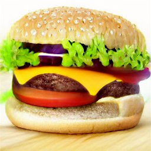
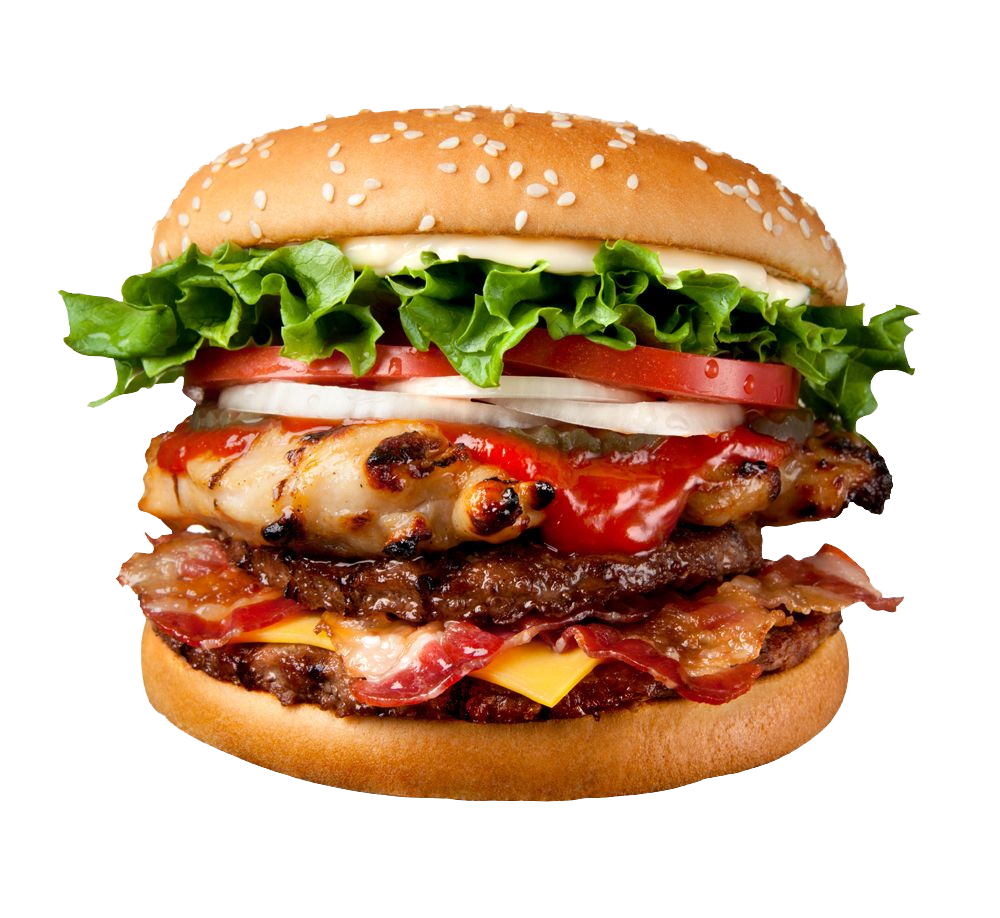

Hamburger
Delicious Hamburger
Many people do not know how to make hammed burgers. I however do know how to make a hammed burger. When you are done reading this, you too will know how to make a hammed burger. Today we will go over the various steps of producing a hammed burger.
~~~~~~~~~~~~~~~~~~~~~~~~~~~~~~~~~~~~~~~~~~~~~~~~~~~~~~~~~~~~~~~~~~~~~~~~~~~~~~~~~~~~~~~~~~~~~~~~~~~~~
Food Requirements
- One pound (five hundred grams) of LEAN and GROUND. BEEF.
- A singular beaten egg
- An onion, grated with coarsity
- Two thirds (⅔) of a cup (☕) (one hundred and fifty milliliters) of cheese curds chopped to finiteness
- Two thirds of a cup (one hundred and fifty milliliters) of cessated potato chips in the flavor of ketchup or plainness
- Two teaspoons (ten milliliters) of steak spice seasoning from Montreal
- Four sizely, juicy, moist, deliciously undulating slices of voluptuous Peameal bacon
- Four entire burger buns, seared to the empirical zenith of immaculateness
- Four lettuce
- Eight smidges of tomatus
~~~~~~~~~~~~~~~~~~~~~~~~~~~~~~~~~~~~~~~~~~~~~~~~~~~~~~~~~~~~~~~~~~~~~~~~~~~~~~~~~~~~~~~~~~~~~~~~~~~~~
Preparatius
- Coagulate the beefus, l'oeuf, oneon, curgs, schip, cheasoning, and coalite the formers unto a patty.
- Using a grease metallic platform, permeate the heat throughout through the patties amidst a slew of rotation until the process of chemical transformation completes. L'internal temperature should not exceed one hundred and sixty degrees° Farenheit, nor herald a sum of time preceding ten to twelve minutes. In the final hours of the burger's dawn, grill the bacon pork with a singular rotation across the span of one hundred and seventy-nine seconds.
- Place down the patty and also the lettuce and also the tomatoes and also the bacon and also the bun. Mead the burger until soft and ripe.
- Uriel's Cooking Tip: For crushed chips, start with a couple of large handfuls of potato chips.
The end result should be a burger!
~~~~~~~~~~~~~~~~~~~~~~~~~~~~~~~~~~~~~~~~~~~~~~~~~~~~~~~~~~~~~~~~~~~~~~~~~~~~~~~~~~~~~~~~~~~~~~~~~~~~~

Hamgurger
Not a hamngurger
~~~~~~~~~~~~~~~~~~~~~~~~~~~~~~~~~~~~~~~~~~~~~~~~~~~~~~~~~~~~~~~~~~~~~~~~~~~~~~~~~~~~~~~~~~~~~~~~~~~~~
Nutritional Values
(Per cup)
- Calories: five hundred and seventy
- Cholesterol: ONE HUNDRED AND FIFTY MILLIGRAMS!
- Sodium: one thousand one hundred and ninety milligrams
- Protein: SO much

Ideal bruger
~~~~~~~~~~~~~~~~~~~~~~~~~~~~~~~~~~~~~~~~~~~~~~~~~~~~~~~~~~~~~~~~~~~~~~~~~~~~~~~~~~~~~~~~~~~~~~~~~~~~~
Health & Safety Information
- Do not place your entire face on the grill while it is turned on.
- Do not eat the meat before it is cooked.
- Wear a seatbelt when driving.
- When driving in Australia, swerve left to avoid a head on collision rather than right.
- Burger meat is intended for oral and not nasal consumption.
- When using a knife, cut towards other people instead of yourself.
- Do not eat within 24 hours of eating.